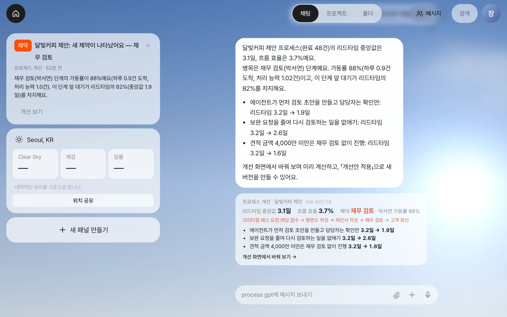
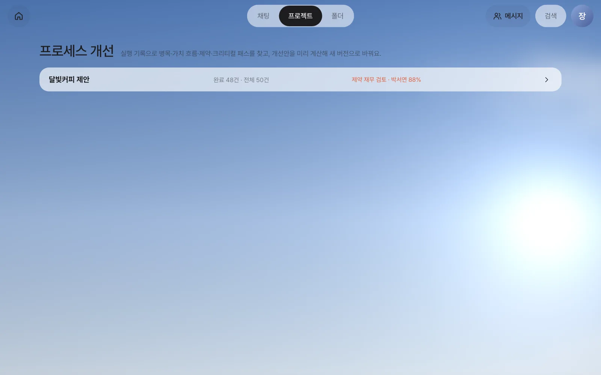
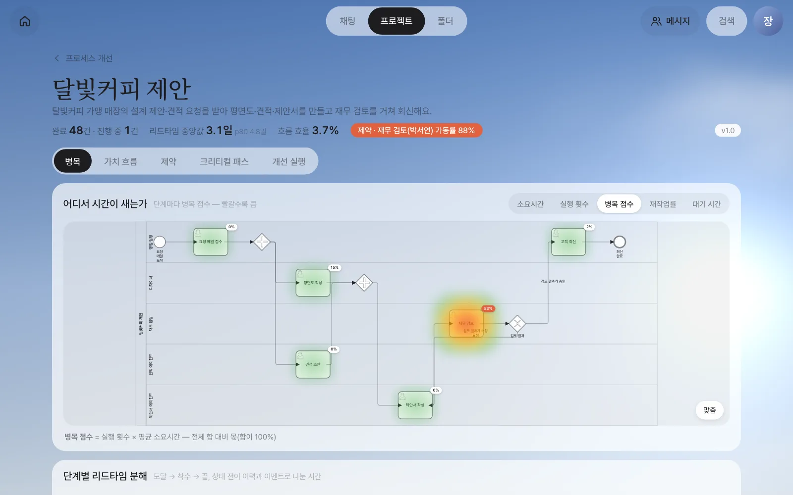
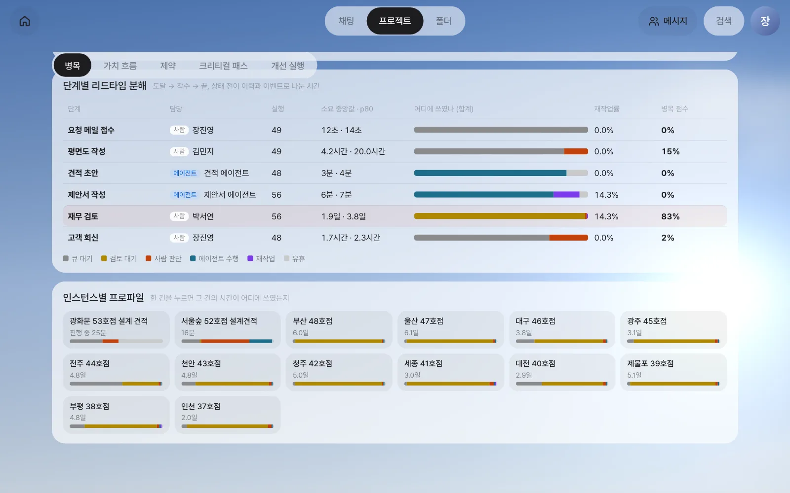
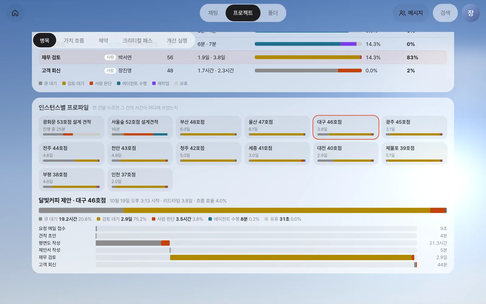
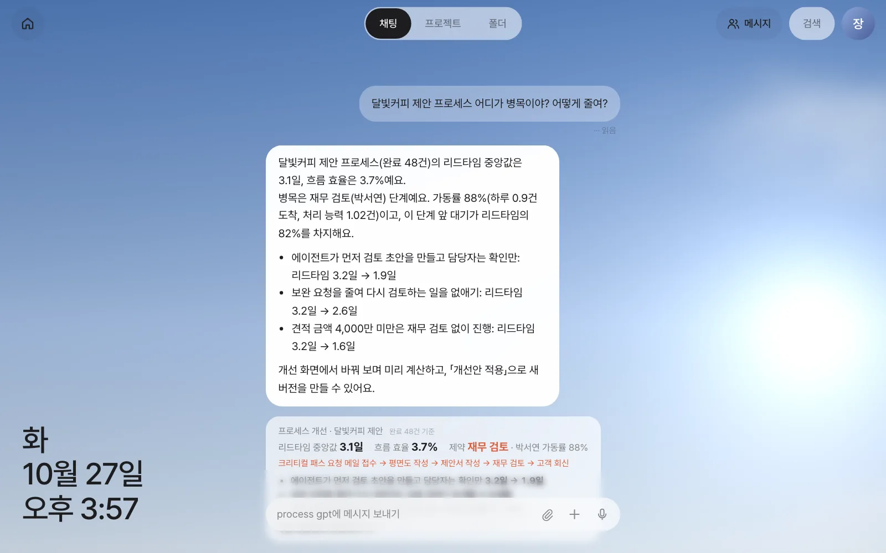

정식 프로세스 「달빛커피 제안」이 석 달 동안 48건 돌았습니다. 그 기록으로 한 건의 리드타임이 어디에 쓰였는지 단계마다 나눠 보고, BPMN 열지도로 병목을 찾고, 한 건씩 들여다본 뒤, 비서에게 말로 물어봅니다.
이야기 — “회신이 너무 늦어요”#
17장에서 대화로 만들었든 19장에서 마이닝으로 찾았든, 정식 프로세스는 돌 때마다 단계별 시작·끝 시각을 남깁니다. 6부에서는 정식 프로세스 「달빛커피 제안」이 석 달 동안 돈 기록으로 실습합니다. 달빛커피 가맹점이 늘어날 때마다 한 주에 서너 건씩 요청이 왔고, 10월에는 다섯 건을 넘겼습니다. 그러자 달빛커피 담당자가 “요청하고 회신을 받기까지 너무 오래 걸린다”고 말합니다.
장진영 팀장은 어디가 느린지 감으로는 짐작이 갑니다. 하지만 “누가 늦다”가 아니라 “일이 어디서 기다리는가”를 숫자로 보고 싶습니다. 이 장에서는 그 숫자를 만듭니다. 다음 21장에서 그 숫자로 전체 흐름과 제약을 읽고, 22장에서 무엇을 바꿀지 미리 계산해 실제로 바꿉니다.
이 장의 예제 데이터
6부의 「달빛커피 제안」은 17장에서 만든 것보다 단계가 단순한 예제 프로세스입니다(아래 표). 8월 초부터 10월 말까지 48건이 완료돼 있습니다. 47건은 프로세스 엔진이 남기는 기록 모양 그대로 넣은 예제 이력이고, 1건은 장진영·김민지·박서연 계정으로 실제로 처음부터 끝까지 돌린 것입니다. 진행 중인 1건(광화문 53호점)도 실제로 돌고 있습니다. 숫자는 모두 이 기록에서 계산한 결과입니다. 이런 기록이 없는 설치에서는 화면 사진과 표의 숫자를 따라 읽으면 됩니다.
| 단계 | 담당 | 하는 일 |
|---|---|---|
| 요청 메일 접수 | 장진영(사람) | 요청 메일에서 매장·면적·예산을 정리해 프로세스를 시작 |
| 평면도 작성 | 김민지(사람) | 매장 평면도와 실별 면적 |
| 견적 초안 | 견적 에이전트 | 면적·예산으로 견적 초안(평면도와 동시에) |
| 제안서 작성 | 제안서 에이전트 | 평면도와 견적으로 제안 요약 |
| 재무 검토 | 박서연(사람) | 금액·조건 확인. 승인하거나 수정 요청(→ 제안서 작성으로 되돌림) |
| 고객 회신 | 장진영(사람) | 제안서·견적서를 붙여 회신 |
리드타임은 어디에 쓰이나#
리드타임은 일이 들어와서 끝날 때까지 걸린 시간입니다. 고객이 체감하는 시간이 바로 이것입니다. 그런데 리드타임 안에서 누군가 실제로 손을 움직이는 시간은 생각보다 짧습니다. 대부분은 기다리는 시간입니다.
Process GPT Lite는 단계 하나가 진행된 시간을 여섯 가지로 나눕니다.
| 구간 | 언제부터 언제까지 | 예 |
|---|---|---|
| 큐 대기 | 단계에 도달한 때 → 담당자가 손을 댄 때 | 김민지 앞에 평면도 요청이 와 있지만 아직 열어 보지 않음 |
| 검토 대기 | 에이전트가 만든 산출물을 사람이 열어 보기까지 | 제안서 에이전트가 끝낸 제안서를 박서연이 열 때까지 |
| 사람 판단 | 사람이 열어서 제출하기까지 | 박서연이 견적을 확인하고 승인 |
| 에이전트 수행 | 에이전트가 실제로 돈 시간 | 견적 에이전트가 견적 초안을 쓰는 2~3분 |
| 재작업 | 같은 건에서 같은 단계를 두 번째 이후로 한 작업 | 수정 요청 뒤 제안서를 다시 쓰고 다시 검토 |
| 유휴 | 어디에도 속하지 않는 틈 | 에이전트가 일을 받아 가기까지의 몇 초 |
이 나눔은 Process GPT의 분석 서비스에 있던 규칙을 그대로 가져온 것입니다. 시간은 두 기록에서만 읽습니다. 작업 항목의 상태가 바뀐 시각(할 일 → 진행 중 → 제출 → 완료)과 에이전트가 남긴 이벤트 시각입니다. 담당자가 작업 항목을 처음 연 순간을 착수로 보므로, 할 일이 와 있어도 열어 보지 않은 시간은 작업이 아니라 대기로 셉니다.
검토 대기가 왜 따로 있나
에이전트를 들이면 만드는 일은 몇 분 만에 끝납니다. 그 뒤 사람이 확인하기까지 기다리는 시간이 새 병목이 되기 쉽습니다. 그래서 “에이전트 산출물이 사람을 기다린 시간”을 따로 셉니다.
병목을 읽는 다섯 지표#
화면의 열지도는 단계마다 아래 지표 가운데 하나를 색으로 보여 줍니다. 빨갈수록 큽니다.
| 지표 | 계산 | 무엇을 알려 주나 |
|---|---|---|
| 소요시간 | 단계에 도달한 때부터 끝날 때까지(대기 포함)의 중앙값 | 한 건이 이 단계에서 보통 얼마나 머무나 |
| 실행 횟수 | 이 단계를 거친 건수(수정 요청으로 다시 거친 것 포함) | 일이 얼마나 자주 지나가나 |
| 병목 점수 | 실행 횟수 × 평균 소요시간이 전체에서 차지하는 몫(합 100%) | 프로세스 전체가 쓴 시간 중 이 단계의 몫 |
| 재작업률 | (반복 건수 ÷ 전체 건수) × 100 | 한 번에 끝나지 않는 비율 |
| 대기 시간 | 도달 → 착수(큐 대기 + 검토 대기)의 중앙값 | 일이 사람을 얼마나 기다리나 |
중앙값은 값을 크기순으로 줄 세웠을 때 가운데 값입니다. 평균과 달리 유난히 오래 걸린 몇 건에 끌려가지 않아 “보통”을 말할 때 씁니다. 늦을 때를 말할 때는 p80(100건 중 80번째)을 함께 봅니다.
따라 하기#
1. 알림에서 열기#
장진영으로 로그인하면 홈에 「제약」 알림이 와 있습니다. 프로세스에 새 병목(제약)이 나타나면 프로세스 담당자에게 한 번 알립니다. 판단은 규칙으로 합니다(가동률 75% 이상이거나 리드타임 중 대기가 40% 이상). 알림의 「개선 보기」를 누릅니다.

알림이 없어도 위쪽 「프로젝트」를 누르고 왼쪽 목록의 「프로세스」 옆 「개선 분석 →」으로 들어갈 수 있습니다. 실행 기록이 있는 프로세스가 나오고, 「달빛커피 제안」을 고릅니다.

2. 열지도로 병목 찾기#
개선 화면 맨 위에는 완료 건수, 리드타임 중앙값 3.1일(p80 4.8일), 흐름 효율 3.7%, 그리고 빨간 「제약」 표시가 있습니다. 흐름 효율과 제약은 21장에서 다룹니다.
「병목」 탭의 다이어그램은 정식 등록 때 만든 BPMN 그대로이고, 단계 뒤의 빛이 선택한 지표의 크기입니다.

| 단계 | 병목 점수 | 읽는 법 |
|---|---|---|
| 재무 검토 | 83% | 프로세스 전체가 쓴 시간의 대부분이 여기서 흘러갔습니다 |
| 평면도 작성 | 15% | 두 번째. 사람이 직접 그리는 단계 |
| 고객 회신 | 2% | |
| 견적 초안·제안서 작성 | 0% | 에이전트는 몇 분 만에 끝냅니다 |
오른쪽 위에서 지표를 「대기 시간」으로 바꿔 보세요. 재무 검토가 여전히 가장 빨갛습니다. 이 단계는 일하는 시간보다 기다리는 시간이 길다는 뜻입니다.
3. 단계별 리드타임 분해#
아래로 내리면 단계마다 시간이 어디에 쓰였는지 막대로 보입니다. 막대의 색은 앞의 여섯 구간입니다.

| 단계 | 실행 | 소요 중앙값 · p80 | 대기 중앙값 | 작업 중앙값 | 재작업률 |
|---|---|---|---|---|---|
| 평면도 작성 | 49 | 4.2시간 · 20.0시간 | 2.6시간 | 1.5시간 | 0% |
| 견적 초안 | 49 | 3분 · 4분 | 0초 | 2분 | 0% |
| 제안서 작성 | 56 | 6분 · 7분 | 0초 | 5분 | 14.3% |
| 재무 검토 | 56 | 1.9일 · 3.8일 | 1.9일 | 44분 | 14.3% |
| 고객 회신 | 48 | 1.7시간 · 2.3시간 | 1.3시간 | 22분 | 0% |
재무 검토는 박서연이 실제로 들여다보는 시간이 44분인데, 그 앞에서 1.9일을 기다립니다. 막대가 거의 전부 노란색(검토 대기)인 것은, 앞 단계가 제안서 에이전트라 에이전트 산출물이 사람을 기다린 시간이기 때문입니다. 실행이 56번인 것은 완료된 48건 중 8번이 수정 요청으로 되돌아가 제안서 작성과 재무 검토를 한 번 더 거쳤기 때문이고, 그래서 두 단계의 재작업률이 14.3%입니다(평면도·견적 초안이 49번인 것은 진행 중인 1건이 이미 거쳤기 때문).
늦는 사람을 찾는 화면이 아닙니다
박서연의 판단 시간은 건당 44분으로 짧습니다. 길어지는 것은 기다림입니다. 기다림은 대개 사람의 성실함이 아니라 일이 들어오는 양과 처리할 수 있는 양의 차이에서 생깁니다. 이 차이는 21장의 제약 이론으로 봅니다.
4. 한 건 들여다보기 — 인스턴스 프로파일#
「인스턴스별 프로파일」에서 한 건을 누르면 그 건의 시간이 어디에 쓰였는지 나옵니다. 위 막대는 그 건 전체의 분해이고, 아래는 단계마다 언제부터 언제까지 무엇을 했는지입니다.

막대의 합은 그 건의 리드타임과 정확히 같습니다. 평면도 작성과 견적 초안처럼 동시에 진행된 구간은 겹쳐 세지 않고, 한 순간을 사람 판단 → 에이전트 수행 → 재작업 → 검토 대기 → 큐 대기 순으로 하나에만 넣습니다. 그래서 “시간이 사라지거나 두 번 세지는” 일이 없습니다.
5. 비서에게 묻기#
채팅에서 물어도 됩니다.
달빛커피 제안 프로세스 어디가 병목이야? 어떻게 줄여?
비서는 위와 같은 계산을 한 뒤 그 숫자로 답하고, 개선 화면으로 가는 카드를 붙입니다.

숫자는 계산이, 말은 모델이
병목·가동률·리드타임 같은 숫자는 모두 기록에서 계산한 값이고, AI 모델은 그 숫자를 받아 설명만 합니다. 모델이 25초 안에 답하지 않으면 같은 숫자를 정해진 문장으로 보여 줍니다(위 사진이 그 경우입니다). 같은 계산은 에이전트가 쓰는 도구로도 들어 있어, 에이전트도 숫자를 지어내지 않고 가져다 씁니다.
정리#
| 질문 | 어디서 보나 | 이 예제의 답 |
|---|---|---|
| 리드타임은 얼마인가 | 화면 위 숫자 | 중앙값 3.1일, p80 4.8일 |
| 시간을 가장 많이 쓰는 단계는 | 병목 점수 열지도 | 재무 검토(83%) |
| 그 단계는 일하나, 기다리나 | 단계별 분해 | 판단 44분, 앞 대기 1.9일 |
| 한 번에 끝나나 | 재작업률 | 14.3%가 수정 요청으로 되돌아감 |
재무 검토가 병목이라는 것은 찾았습니다. 다음 장에서는 한 걸음 물러나 흐름 전체에서 일한 시간과 기다린 시간을 한 장에 그리고, 전체 속도를 정하는 단계(제약)가 왜 재무 검토인지 숫자로 확인합니다(21장).
확인 문제
- 평면도 작성의 소요시간 중앙값은 4.2시간인데 p80은 20.0시간입니다. 두 숫자의 차이는 무엇을 뜻할까요?
- 재무 검토의 대기는 왜 “큐 대기”가 아니라 “검토 대기”로 잡혔을까요?
- 병목 점수가 “소요시간”만으로 정해지지 않고 실행 횟수를 곱하는 이유는 무엇일까요? 한 해에 한 번 3일 걸리는 단계와 매일 두 시간 걸리는 단계를 비교해 설명해 보세요.
답
- 보통은 반나절 안에 끝나지만, 다섯 건 중 한 건은 하루 가까이 걸린다는 뜻입니다. 김민지가 오후에 받은 요청은 다음 날로 넘어가는 경우가 많아, 늦을 때의 꼬리가 깁니다.
- 재무 검토 바로 앞 단계(제안서 작성)가 에이전트이기 때문입니다. 에이전트가 끝낸 산출물이 사람을 기다린 시간은 검토 대기로 따로 셉니다.
- 병목 점수는 프로세스 전체가 쓴 시간 중 그 단계의 몫입니다. 한 해 한 번 3일은 합계 3일, 매일 두 시간은 한 해 수백 시간이므로 뒤쪽이 전체 시간을 훨씬 많이 씁니다. 자주 지나가는 단계의 작은 지연이 큰 병목이 될 수 있습니다.